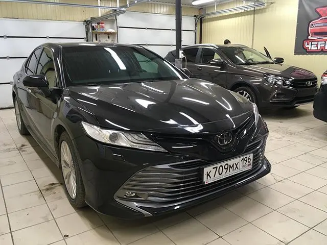
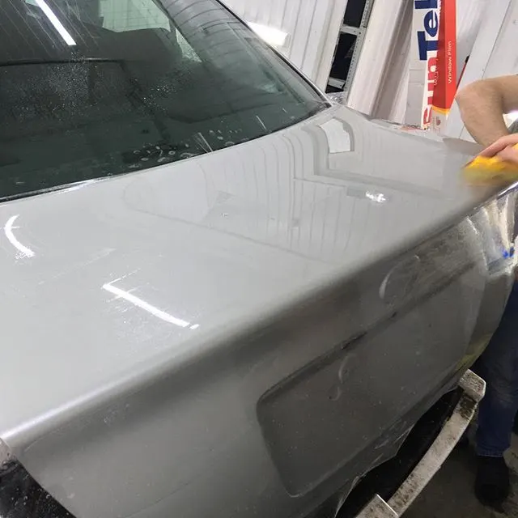
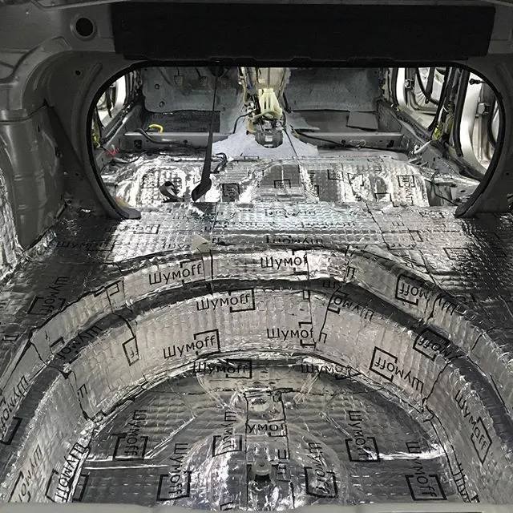
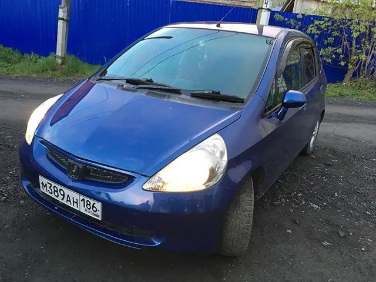
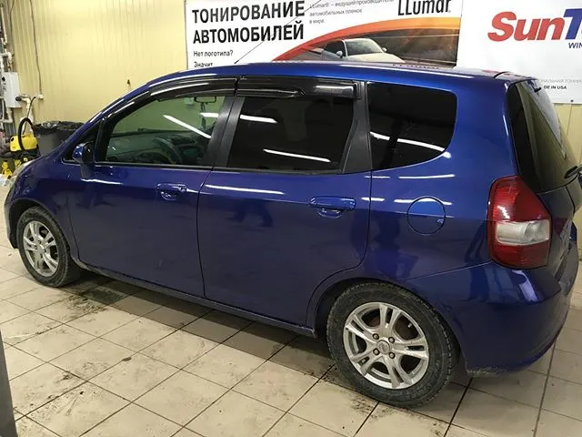
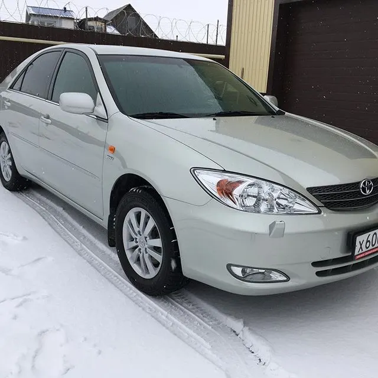

ТеньТонировка
Задняя полусфера, передние боковые по ГОСТ, атермальная плёнка на лобовое, фонари, растонировка.
Стоимость – уточнить при записи
Тонировка без разбора салона · Тюмень
Закрываем машину от солнца, камней и шума. Тонируем без разбора обивок дверей и салона. Подберём плёнку под ваши стёкла и покажем результат до выдачи.
Выберите, что нужно машине, – отмеченное сразу попадёт в запись.

Задняя полусфера, передние боковые по ГОСТ, атермальная плёнка на лобовое, фонари, растонировка.
Стоимость – уточнить при записи

Полиуретановая антигравийная плёнка на фары, ударную часть, пороги – или на весь кузов.
Стоимость – уточнить при записи

Двери, колёсные арки, пол и багажник – по зонам или полностью.
Стоимость – уточнить при записи
Переключайте слои: стёкла для тонировки, зоны риска для плёнки, двери и пол для шумоизоляции.
Выберите стекло и процент светопропускания плёнки. Мы сразу подскажем, что можно по закону.
Стекло
Светопропускание плёнки
Процент на плёнке – не итог: заводское стекло тоже затемняет, поэтому стекло с плёнкой всегда темнее цифры на плёнке.
Реальные машины из постов студии.



ДоВ работеТонировка: сзади SunTek HP PRO 15, спереди атермальная SunTek Carbon 80. Кадры из поста студии ВКонтакте, 21.05.2019.
Комплекс: мойка, полная шумоизоляция, полиуретан на весь кузов, тонировка. Кадры из поста студии ВКонтакте, 09.04.2019.
Нажмите «Слушать» и переключайте режим. Чем выше скорость, тем заметнее гул от арок и пола.
Скорость
Звуковая иллюстрация, не замер. Реальный результат зависит от машины и выбранных зон.
Так о студии пишут клиенты – а мы просто разложили это по передачам.
Выбираете услуги и день – машину ждут к вашему времени.
«приехал ко времени по записи, сделали все аккуратно и чисто»Иван Г, 2ГИС
Объясняем, чем отличаются плёнки и что можно клеить на передние стёкла.
«Посоветовали пленку,заднюю часть авто сделали качественно»City spirit, 2ГИС
Тонируем без демонтажа обивок, салон и обшивку укрываем.
«Когда мастер клеил плёнку, внутри все укрыл»Иван Г, 2ГИС
Рассказываем и показываем, что сделано, – и отдаём машину.
«сделали всё на высшем уровне, всё рассказали и показали»Дмитрий Салий, 2ГИС
Фото из ВКонтакте и карточки студии. Нажмите, чтобы открыть крупно.
Дословно, с карточек студии на Яндекс Картах и в 2ГИС.
«к автомобилям относятся как к своим, приятные ребята, всё доступно объясняют и показывают»
Исмаил МурадовЯндекс Карты · 27.10.2022
«Долго искал место, где сделаю тонировку без снятия панелей. Вот прям очень переживал что потом будут все карты дверей тарахтеть, клипсы какие нибудь сорвут. В общем нашел.»
Сергей Пахомов2ГИС · 21.11.2024
«Когда мастер клеил плёнку, внутри все укрыл, чтобы жидкость не попала на обшивку.»
Иван Г2ГИС · 14.09.2024
«Уже третью машину тонирую тут. Первую машину 6 лет назад пригонял.»
Saymon Mcstanton2ГИС · 04.04.2024
«Хороший мастер затонировали камри на высшем уровне и цена адекватная 👍»
Владимир КетовЯндекс Карты · 08.07.2026
«Обращался два раза: по тонированию и бронированию автомобиля! Отлично выполняют свою работу! Молодцы! Спасибо!»
Ильдар Халитов2ГИС · 07.10.2026
«Большой выбор пленок, хорошее качество и приятный коллектив»
Евгений Вдовенко2ГИС · 31.01.2023
«Записался, приехал, затонировали)) Затонировали быстро и качественно! Бонусом убрали скрип задней полки.»
Михаил ВдовичевЯндекс Карты · 26.01.2023
Проверка за 10 секунд
1. Какое стекло
2. Какая плёнка
Ответ появится здесь.
Да, но итог должен быть не ниже 70% светопропускания – это требование ТР ТС 018/2011 (приложение 8, п. 4.3) и ГОСТ 32565-2013 (п. 5.1.2.5) для лобового и передних боковых. Поэтому вперёд клеят только светлые атермальные плёнки.
Для задних боковых и заднего стекла ограничений по светопропусканию нет, если у машины есть два наружных зеркала заднего вида.
500 ₽ по ч. 3.1 ст. 12.5 КоАП РФ. Если требование устранить не выполнено – уже ст. 19.3 КоАП.
Из поста студии: «Более 90% автомобилей мы тонируем без какого либо демонтажа деталей (без разбора)».
В работах студии – LLumar (ATR, атермальная AIR 80) и SunTek (HP PRO, атермальная Carbon 80). Какие плёнки в наличии сейчас – уточните при записи.
Стоимость зависит от машины, стёкол и плёнки – уточните при записи по телефону или в сообщении.
Нормы: ТР ТС 018/2011 и ГОСТ 32565-2013 в решении Мосгорсуда. Штраф – ст. 12.5 КоАП РФ.
Отметьте одну или несколько услуг, машину и удобный день. Сообщение соберётся само – останется отправить его в Telegram или ВКонтакте.
Пока карта без метки, чтобы никого не отправить не туда. Адрес можно уточнить по телефону.
Черное Солнце · Тюмень
Тень от солнца, броня от камней, тишина в салоне.